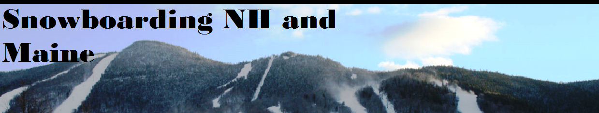

|  | |
Things to know once you are geared up and on the mountainPracticing on level or slightly inclined ground:The first that you should do as a beginner is lay the board on the snow on a level area. Next, strap your front foot into the binding. Your other foot is free to balance on and also do something called kicking. This is when you kick off of that foot, to propel yourself forward. This is how a snowboarder gets around on flat ground and how they get on lifts. It's alot better than taking the board off and walk in most cases. You can glide to rest by putting kicking foot on the board to "coast". If you need to stop or slow down you can take that foot off and drag or press it into the snow. |
|
|
|
Skating and getting on a lift. |
Gliding and getting off the chair lift. |
Next step is to move to the bunny slope to heel and toe side stop along with later incorporating turns:Heelslide is when you put pressure on the heels of you feet by slightly rise your toes. The opposite is true for toeslide. Now to try slidding. While you have feet and shoulders square to the slope, slide down on your heels, this will allow you to control speed. Make sure to keep even pressure on both feet. If you apply pressure to one side more than the other you will slide toward that side, which is actually a basic way of turning. |
|
|
|
Heelslide/changing direction |
Toeslide/changing direction |
Basic way to stop on a snowboard:This is done by angling you board down the mountain by shifting shoulders vetical while putting pressure on your front foot to pick up speed. Just as with the slides, to stop you choose a side, either toe or heal, pick dominant one at first. Slowly take pressure off of the front foot and push back foot to dominant edge making the board horizontal to the slope. |
|
Copyright © 2013 Zachary Dudek